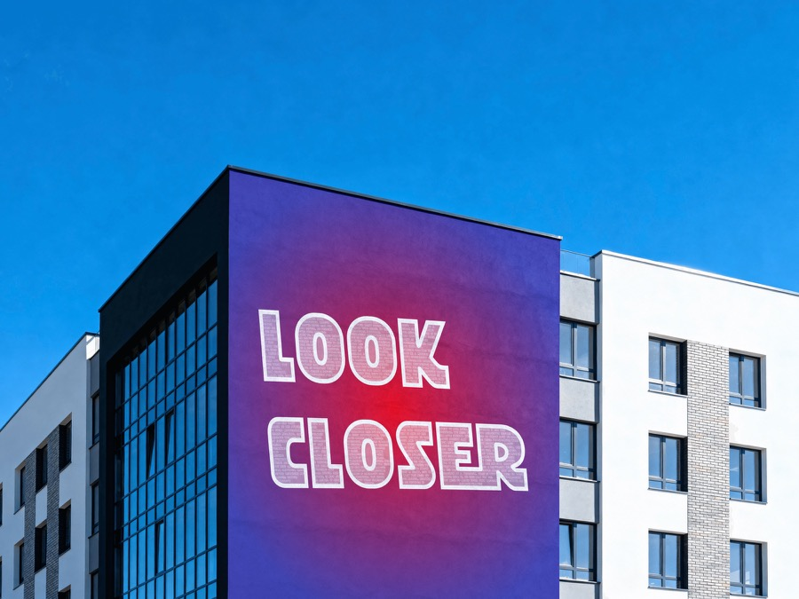

Digital udvikler / Designer
Frida
Ramsing.
Nysgerrig af natur.
Jeg trives med en god udfordring og elsker at gøre idéer til virkelighed gennem design og udvikling. Har du ikke idéen endnu, finder vi den sammen.
Se mit arbejde ↓
Lidt om mig.
Jeg arbejder med visuelt design, prototyper i Figma og udvikling i React. Jeg kan godt lide at være med hele vejen fra den første skitse til noget, andre kan bruge. Og når jeg ikke laver hjemmesider, får nysgerrigheden ofte frit spil i en plakat eller et maleri.
Et udvalg af mit arbejde.
Udvalgte projekter / 2026
Når jeg ikke koder
Ikke alt
behøver en opgave.
Malerier, plakater og idéer, jeg prøver af, fordi jeg har lyst. Der behøver ikke altid være en opgave bag.
Se min kreative side ↗
Det kan jeg bidrage med.
Design og prototyper.
Visuel identitet, brugerflader og interaktive prototyper i Figma.
Udvikling og forbedring.
React, HTML, CSS og JavaScript. Jeg får design og funktion til at hænge sammen.
Kreative idéer.
Plakater, visuel fortælling og lysten til at afprøve noget nyt.